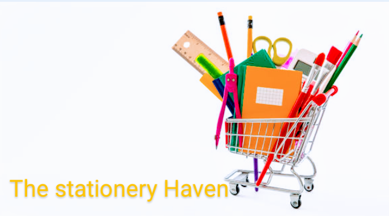

School Website
One of my most rewarding projects was developing a comprehensive school website that catered to the needs of students, parents, teachers, and administrators.

Stationery Haven
Developed a sophisticated stationery website designed to revolutionize how people shop for their everyday office and school supplies.
Program Apps
Throughout my career, I've developed various program apps designed to solve specific problems, enhance productivity, and provide users with a seamless, efficient experience.